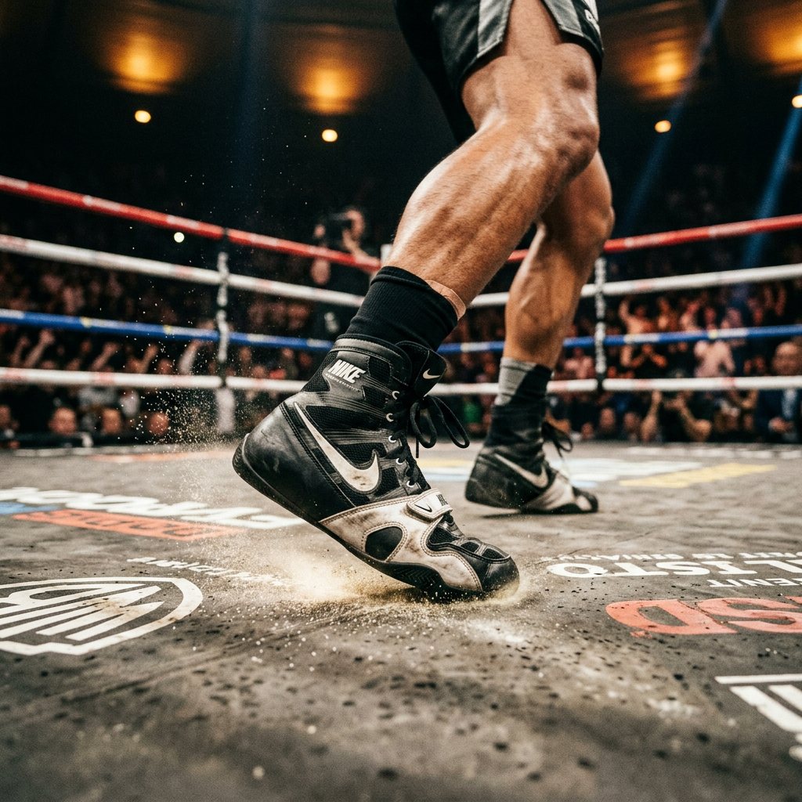
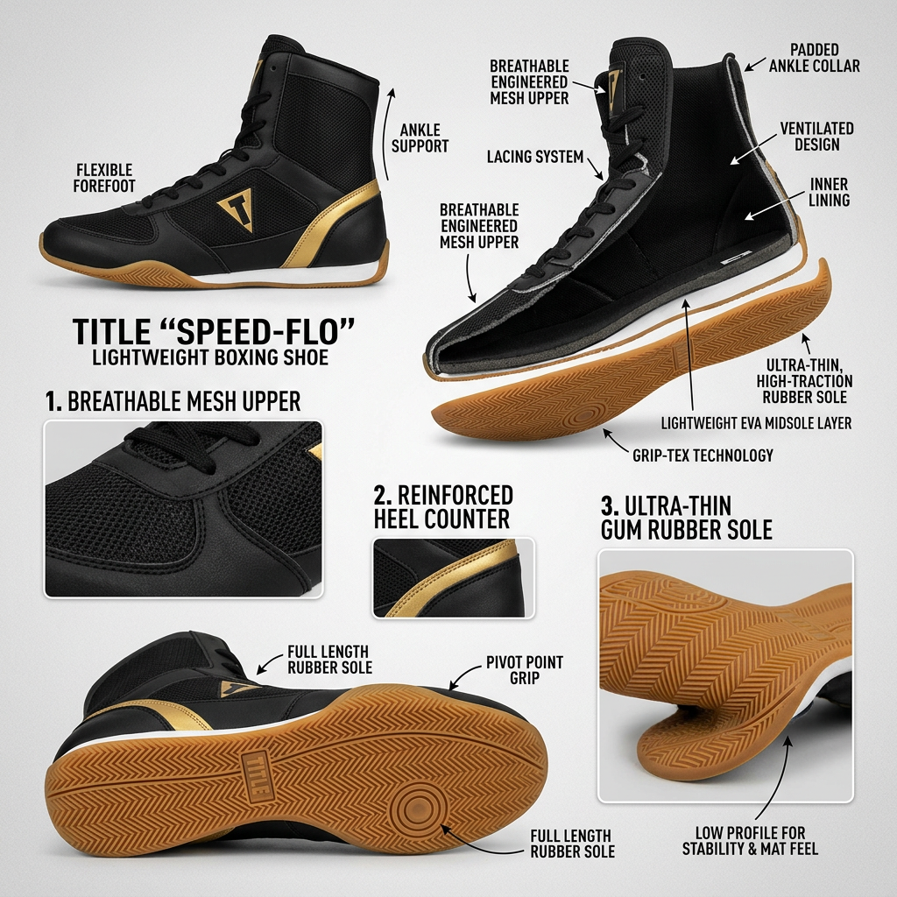
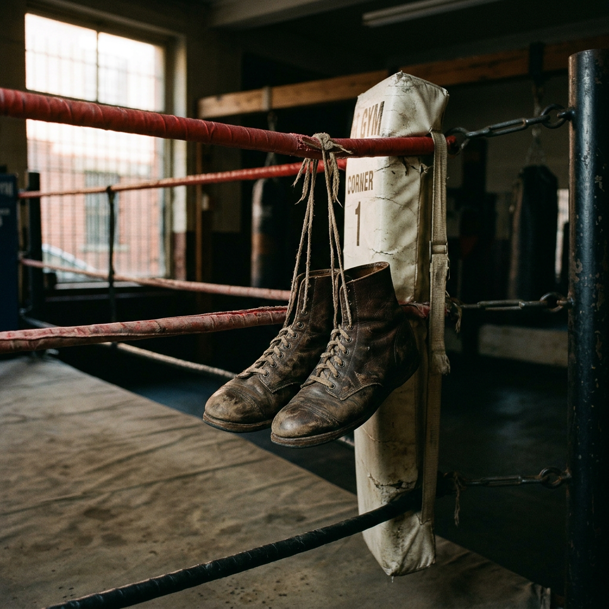

The Ultimate Guide to Boxing Shoes: Unlock Speed, Power, and Precision Footwork
Are Your Feet Sabotaging Your Knockout Power?
In the world of combat sports, your power doesn't start in your fists—it starts in your feet. If you are training in standard running shoes or cross-trainers, you are fighting a losing battle against physics. Running shoes are designed for forward linear motion and maximum cushioning, which creates a 'mushy' platform that absorbs the energy you need for explosive pivots and stable stances.
High-performance boxing shoes are engineered for a singular purpose: to provide a direct connection between your kinetic chain and the canvas. Without the right footwear, you risk slipping during a crucial exchange, suffering from rolled ankles, or losing the friction necessary to sit down on your punches. This guide breaks down exactly what high-intent fighters need to look for to dominate the ring.

The Anatomy of a Championship-Grade Boxing Shoe
Choosing the right pair isn't just about aesthetics; it’s about mechanical advantage. To find the pair that fits your fighting style, you must evaluate three critical components: the sole, the height, and the weight.
1. Sole Grip and Pivot Ability
The sole of a boxing shoe is significantly thinner than a traditional sneaker. This low-profile design allows for a 'feel' of the canvas, giving you better tactile feedback. Look for a rubberized sole with a pattern designed for multi-directional movement. A great shoe allows you to grip the floor when you need to drive power into a hook, yet provides enough smoothness to pivot your lead foot without catching and straining your knee.
2. Ankle Support: Low-Top vs. High-Top
Your choice in ankle height usually depends on your style of movement:
- Low-Tops: Preferred by speed-based fighters and 'out-boxers' who move constantly. They offer maximum range of motion for the ankle, allowing for quick direction changes, though they offer less structural support.
- Mid-Tops: The versatile middle ground, offering a balance of lateral stability and mobility.
- High-Tops: Essential for fighters who have a history of ankle injuries or those who prefer a 'locked-in' feel. They provide immense support for the lower leg and Achilles, which is vital for heavy hitters who plant their feet firmly.
3. Weight and Material
In the later rounds, every ounce feels like a pound. Synthetic mesh is the gold standard for modern boxing shoes because it offers incredible breathability while keeping the weight to a minimum. However, traditional leather and suede options still hold value for their durability and the way they mold to the shape of your foot over time.

Why Professional Footwear is a Non-Negotiable Investment
Many beginners make the mistake of thinking gear doesn't matter until they turn pro. This is a misconception that leads to bad habits. Boxing shoes change your center of gravity. By lowering your profile to the ground, you improve your balance and reduce the 'clumsiness' often felt by novices. Furthermore, the lateral reinforcement in these shoes prevents the foot from sliding inside the shoe, a common cause of blisters and sprains during intense sparring sessions.
How to Ensure the Perfect Fit
When you receive your shoes, the fit should be 'snug but not suffocating.' Unlike running shoes, where you want a bit of a 'thumb's width' at the toe, boxing shoes should fit closer to the foot to prevent any internal sliding. A loose boxing shoe is a liability; it will cause you to lose traction at the exact moment you need to explode off your back foot.
- Check the Width: Many brands run narrow. If you have wide feet, look for specific 'wide' models to avoid cramping.
- Test the Pivot: Put the shoes on and perform several lead-hook pivots on a hard floor. The shoe should feel like an extension of your foot, not a bulky attachment.
- Breathability Check: Ensure there is adequate ventilation. Boxing gyms are notoriously hot, and moisture-wicking materials will extend the life of your shoes by preventing rot and odor.
The Verdict: Elevate Your Game
The transition from standard athletic shoes to dedicated boxing shoes is often the 'lightbulb moment' for many fighters. You will suddenly find that your footwork is crisper, your stance is more grounded, and your confidence in the ring skyrockets. Whether you are a hobbyist or an aspiring contender, your feet are your foundation. Treat them with the respect they deserve by choosing footwear designed for the sweet science.
